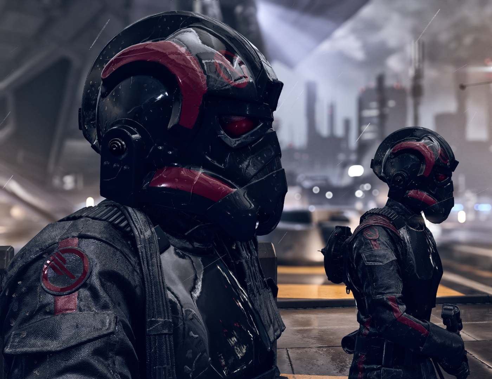
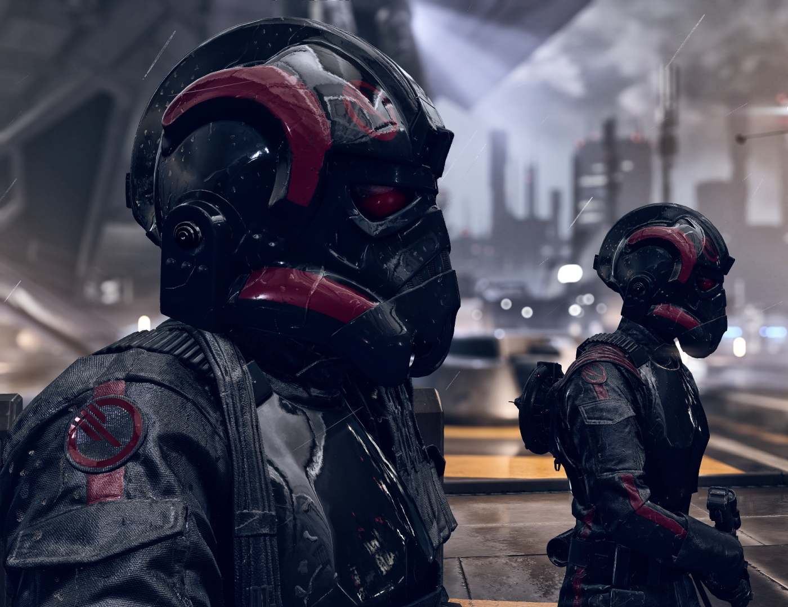

Historia
 

Star Wars BattleFront II
En una galaxia muy muy lejana, el emperador Palpatine planea atraer
a una desprevenida flota de la Alianza Rebelde a una trampa usándose
a sí mismo y la segunda Estrella de la Muerte, construida sobre la luna
forestal de Endor, como cebo, buscando aplastar la Rebelión contra su Imperio
Galáctico de una vez por todas. Sin embargo, su plan falla y es derrotado por
las fuerzas de la Alianza.
Sigue la historia de Iden Versio, lider del escuadrón infernal perteneciente
a las fuerzas especiales imperiales, que busca aplastar las fuerzas de la Alianza Rebelde
para vengar al emperador.
En una galaxia muy muy lejana, el emperador Palpatine planea atraer
a una desprevenida flota de la Alianza Rebelde a una trampa usándose
a sí mismo y la segunda Estrella de la Muerte, construida sobre la luna
forestal de Endor, como cebo, buscando aplastar la Rebelión contra su Imperio
Galáctico de una vez por todas. Sin embargo, su plan falla y es derrotado por
las fuerzas de la Alianza.